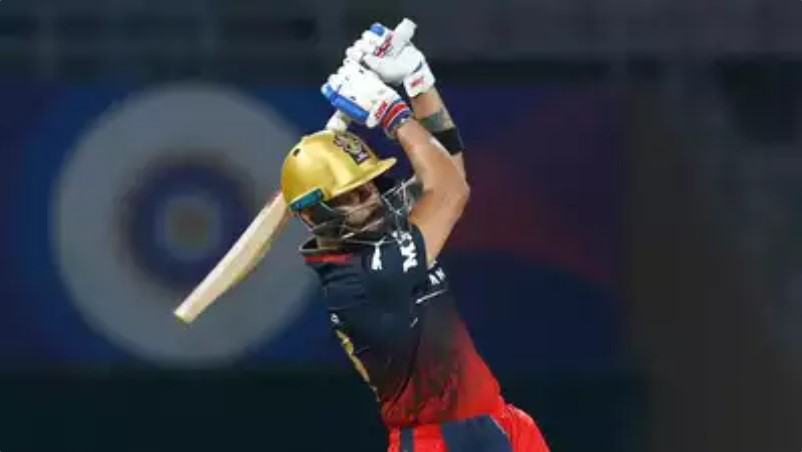
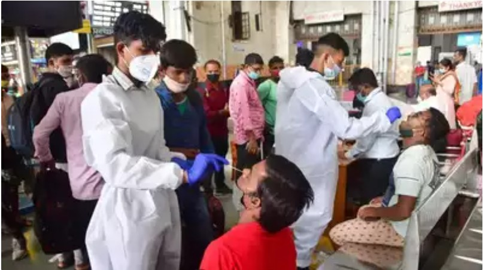
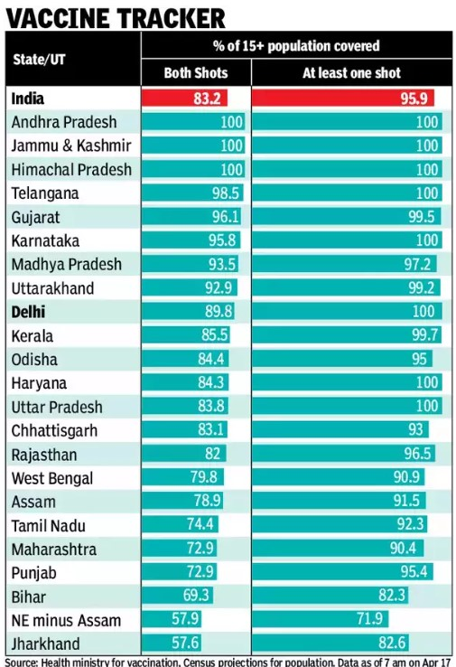

|
Virat Kohli remains the best Indian batter overall, but the wait for big scores continues
_______

NEW DELHI: He hasn't scored a hundred in more than two years, his overall scoring form has dropped, and despite all his efforts he continues to struggle
to get big scores. Despite all these, modern day batting great, Virat Kohli remained the best batter for India even in the last couple of years.
The description-'the only batter with 50-plus average in all three formats - doesn't hold true anymore for the former India captain, as Kohli's Test
average ha gone down below 50 after a long time (49.95 to be precise). Despite the dip, experts and fans admit that he hasn't really lost form, is hitting
the ball well and timing his shots perfectly, but somehow the big scores continue to elude a batter who at one time was the most prolific batter in international cricket.
|
Fourth Covid wave in India unlikely: IIT Kanpur professor
_______

LUCKNOW: The possibility of a fourth wave of Covid-19 in India remains low, believes IIT Kanpur professor Manindra Agarwal,
whose mathematical model has been a reference point for understanding the pandemic activity and behaviour in the country over the past two years.
Talking to TOI on Sunday, he said: "The surge in Covid-19 cases is not building up the fourth wave, as of now." On the reason for surge in cases
in several states, including Delhi and NCR districts of Gautam Budh Nagar and Ghaziabad of UP, he said. "The present rise in cases appears to be
the result of lifting of curbs. It looks like a result of life returning to normalcy."
|
K.G.F: Chapter 2 Movie Review : A brutal tale of raw machismo and a hint at a third chapter
_______
KGF 2 Plot: Raja Krishnappa Bairya aka Rocky Bhai has become the ruler of KGF after killing Garuda. But as he decides to own the world,
he finds big foes in the form of Adheera and Ramika Sen. Does he still get his 'duniya'?
KGF 2 Review: 'KGF:Chapter 1' set the tone for a slick gangster franchise-high on style and details. The first part was all about establishing
the intentions and power of Raja Krishnappa Bairya aka Rocky Bhai. The second part has managed to create hype with its promotional content that
gives a peek into the film. Does the film manage to match the build-up? It does and provides a better sequel and also has a big surprise for fans in the end, too.
|

|